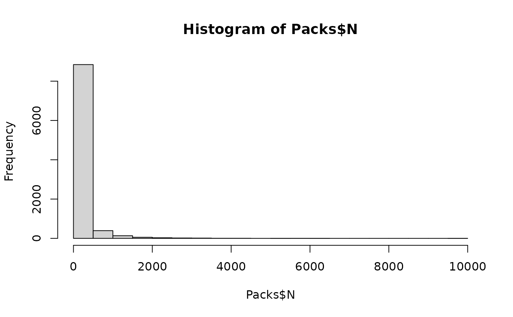

Cross-contamination of cantaloupe during dicing and partitioning into packed units
Source:R/caPartitioningCC.R
caPartitioningCC.RdThe caPartitioningCC() function simulates the potential cross-contamination of cantaloupes, when in direct contact with the dicing machine
or knives, followed by the partitioning of all dices produced in one processing lot (sublot) into packed units.
The cross-contamination algorithm accounts for four possible scenarios:
cross-contamination occurring in sublots already contaminated;
contamination occurring in sublots that were not contaminated;
no cross-contamination occurring in sublots already contaminated; and
no cross-contamination occurring in sublots that were not contaminated. Probabilities of occurrence of every event are computed.
The partitioning algorithm randomly distributes the total numbers of cells from a contaminated sublot of dices into packed units. The dispersion factor b,
which is a parameter of the beta distribution, indicates the extent of cell clustering in the bulk of dices in the sublot, and ultimately
the heterogeneity in the number of cells distributed among pack units.
Usage
caPartitioningCC(
data = list(),
probCCDice,
trDicerMean = -1.42,
trDicerSd = 0.52,
nDicer,
b = 1,
unitSize,
cantaRindFree = NULL,
sizeSublot = NULL,
sizeLot = NULL
)Arguments
- data
a list of:
N(
CFU) A matrix of sizenewMCsublots bysizeSublotportions of dices from one cantaloupe representing the numbers of L. monocytogenes in dices;PPrevalence of contaminated sublots (scalar).
- probCCDice
Probability of cross-contamination from the dicing machine (scalar).
- trDicerMean
Mean of the transfer coefficient of L. monocytogenes from dicing machine to cantaloupe flesh (scalar or vector).
- trDicerSd
Standard deviation of the transfer coefficient of L. monocytogenes from dicing machine to cantaloupe flesh (scalar or vector).
- nDicer
(
CFU) Numbers of L. monocytogenes on the surface of the dicing machine ready to be transferred (scalar or vector).- b
Dispersion factor of the beta distribution representing the degree of heterogeneity in the number of cells between pack units (scalar).
- unitSize
(
g) Weight of a pack of cantaloupe dices (scalar).- cantaRindFree
(
g) Weight of a seedless rind-free cantaloupe (scalar).- sizeSublot
Number of cantaloupes processed in a sublot. It should be a multiple of
sizeLot(scalar).- sizeLot
Number of cantaloupes from a harvested lot (scalar).
Value
A list with four elements:
N(
CFU) A matrix of sizenewMCsublots by Number_packs number of packs containing the numbers of L. monocytogenes in a pack, from contaminated lots;PPrevalence of contaminated sublots (scalar);
sizeSublotNumber of cantaloupes processed in a sublot (scalar);
sizeLotNumber of cantaloupes from a harvested lot (scalar).
Note
The value of \(beta = 1\) represents moderate clustering of cells in the bulk of diced cantaloupe from a sublot Nauta (2005) . Hoelzer et al. (2012) established the log 10 of the transfer coefficient of L. monocytogenes from knives to vegetables as a normal distribution with \(TRdicer\_mean = -1.42\) and \(TRdicer\_sd = 0.52\).
References
Hoelzer K, Pouillot R, Gallagher D, Silverman MB, Kause J, Dennis SB (2012). “Estimation of Listeria monocytogenes transfer coefficients and efficacy of bacterial removal through cleaning and sanitation.” International Journal of Food Microbiology, 157, 267-77. doi:10.1016/j.ijfoodmicro.2012.05.019 . Nauta MJ (2005). “Microbiological risk assessment models for partitioning and mixing during food handling.” International Journal of Food Microbiology, 100(1), 311–322. doi:10.1016/j.ijfoodmicro.2004.10.027 . Wolodzko T (2020). extraDistr: Additional Univariate and Multivariate Distributions. R package version 1.9.1, https://CRAN.R-project.org/package=extraDistr. Pouillot R, Delignette-Muller M (2010). “Evaluating variability and uncertainty in microbial quantitative risk assessment using two R packages.” International Journal of Food Microbiology, 142(3), 330-40. Boshnakov GN (2022). “Rdpack: Update and Manipulate Rd Documentation Objects.” doi:10.5281/zenodo.3925612 , R package version 2.4. Team RC (2022). R: A Language and Environment for Statistical Computing. R Foundation for Statistical Computing, Vienna, Austria. https://www.R-project.org/. FDA (2021). “FDA-iRISK 4.2 Food Safety Modeling Tool: Technical Document.” U.S. Food and Drug Administration.
Author
Ursula Gonzales-Barron ubarron@ipb.pt
Examples
library(extraDistr)
library(mc2d)
sizeLot <- 500 # 500 cantaloupes were harvested from a field
sizeSublot <- 50 # sublots of 50 cantaloupes are processed at each time
dat <- Lot2LotGen(
nLots = 50,
sizeLot = 100,
unitSize = 500,
betaAlpha = 0.5112,
betaBeta = 9.959,
C0MeanLog = 1.023,
C0SdLog = 0.3267,
propVarInter = 0.7
)
str(dat)
#> List of 10
#> $ Lot2LotGenParameters:List of 9
#> ..$ nLots : num 50
#> ..$ sizeLot : num 100
#> ..$ unitSize : num 500
#> ..$ betaAlpha : num 0.511
#> ..$ betaBeta : num 9.96
#> ..$ C0MeanLog : num 1.02
#> ..$ C0SdLog : num 0.327
#> ..$ propVarInter: num 0.7
#> ..$ Poisson : logi FALSE
#> $ lotMeans : num [1:50] 5.3885 1.2098 0.1915 0.414 0.0616 ...
#> $ unitsCounts : num [1:5000] 0 0 0 0 0 0 0 0 0 0 ...
#> $ N : num [1:50, 1:100] 0 0 0 0 0 0 0 0 0 0 ...
#> $ ProbUnitPos : num [1:50] 1 1 0.5985 0.7076 0.0957 ...
#> $ P : num 0.71
#> $ betaGen : num [1:50] 0.12806 0.10733 0.00908 0.01222 0.00101 ...
#> $ nLots : num 50
#> $ sizeLot : num 100
#> $ unitSize : num 500
#> - attr(*, "class")= chr "qraLm"
Packs <- caPartitioningCC(dat,
probCCDice = 0.08,
trDicerMean = -1.42,
trDicerSd = 0.52,
nDicer = 280,
b = 1,
sizeSublot = 50,
cantaRindFree = 950,
unitSize = 250
)
hist(Packs$N)
